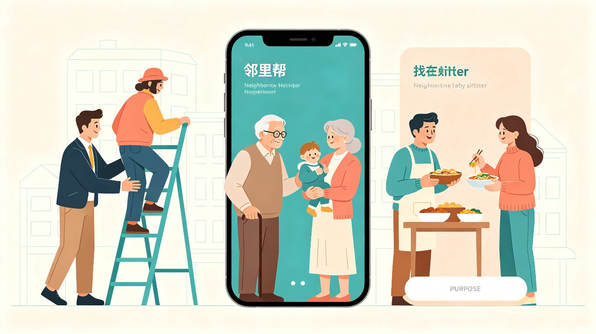

用科技重建邻里信任，让社区资源流动起来

现代城市社区中，邻里关系日益淡漠，居民在日常生活中遇到临时困难时缺乏便捷的求助渠道；同时，社区内大量闲置资源（工具、技能、时间）未被有效利用，造成资源浪费与社交隔离的双重困境。
这一观察促使我思考：能否用数字产品来重建社区互助网络？让"远亲不如近邻"不再只是一句古语，而是每个社区的真实日常。
"邻里帮"是一款基于微信小程序的社区互助共享平台，配套后台管理系统，支持需求发布、资源匹配、信用评价、社区活动组织等核心功能，让邻里互助像点外卖一样简单。
工作繁忙，缺乏时间处理生活琐事，需要临时帮助（如代收快递、代喂宠物、借工具等）。
子女不在身边，日常生活中需要陪伴和简单帮助（如搬重物、修家电、陪诊等）。
育儿经验不足，需要临时托管、二手母婴用品、育儿经验交流等支持。
拥有维修、烹饪、辅导等专业技能，愿意在空闲时间帮助他人并获得社区认可。
在没有"邻里帮"的情况下，用户面临以下困境：
在原子化社会趋势下，"邻里帮"致力于重建社区社会资本。每一次互助行为都是一次信任积累，每一次真诚感谢都是一次情感连接。当社区成员从"陌生人"变成"熟悉的邻居"，整个社区的安全感、归属感和凝聚力都将显著提升。
通过精准的需求-资源匹配算法，平台能够将社区内的闲置资源（物品、技能、时间）高效配置给最需要的人。一件闲置工具可以被多位邻居轮流使用，一位退休教师的辅导时间可以惠及多个家庭——让每一份资源创造最大价值。
支持文字、语音、图片多种方式发布求助或共享信息，AI自动分类和标签推荐。
基于地理位置、技能标签、信用评分的智能匹配算法，快速找到最合适的帮助者。
双向评价机制 + 社区认证标签，建立可靠的邻里信任网络。
发起和参与社区公益活动、技能培训、节日聚会，增强社区凝聚力。
"邻里帮"不仅是一个工具型产品，更是一次社区关系数字化重构的尝试。我们相信，当技术被用来连接人而非隔离人，当共享经济的理念从商业领域延伸到邻里之间，城市社区将重新成为温暖、互助、有归属感的生活共同体。
未来，我们计划引入社区积分公益体系，让每一次互助行为都可以转化为可兑换的社区服务或公益捐赠，真正实现"我为人人，人人为我"的良性循环。